إشارات الإرشاد
24 إشارة، كل وحدة بمعناها وبالصوت.
1

إجبارية الإنعطاف على اليمين
2
إجبارية الإنعطاف على اليسار
3
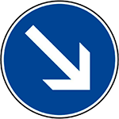
مدار إجباري نحو اليمين
4
مدار إجباري نحو اليسار
5
إجبارية إكمال السير للأمام
6
إجبارية إكمال السير على اليمين أو على اليسار
7
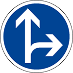
إجبارية إكمال السير إلى للأمام أو الإنعطاف على اليمين
8
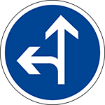
إجبارية إكمال السير إلى الأمام أو الإنعطاف على اليسار
9
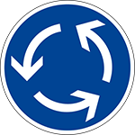
إتجاه مداري إجباري (رومبوان إجباري)
10
اتجاه إجباري عند أول ملتقى طرق: نحو اليمين
11
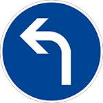
اتجاه إجباري عند أول ملتقى طرق: نحو اليسار
12
مسلك إجباري لمركبات النَّقْل الجماعي
13
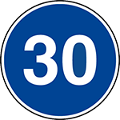
تحديد السُّرعة الدُّنيا الإجبارية (لا يمكن السير بأقل من 30 كلم في الساعة)
14
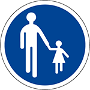
مسلك أو ممر خاص بالراجلين
15
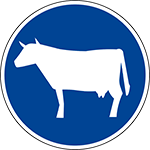
ممر أو مسلك خاص بالحيونات الأليفة
16
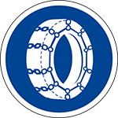
يجب إستعمل سنسلة في العجلة (تلج أو جليد) على الأقل في عجلتين
17
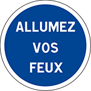
إجباري تشغيل الأضواء
18
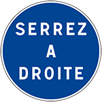
إجبارية التزام أقصى اليمين
19
مسلك أو ممر إجباري للفرسان
20
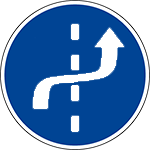
يجب السياقة في أقصى اليمين هذه العلامة توجد في وسط المدينة والاماكن المزدحمة
21
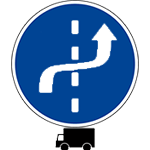
يجب على الشاحنات السياقة في اقصى اليمين
22
مسلك أو ممر خاص مسموح فيه على الدراجات
23
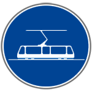
خاص بالطرامواي
24
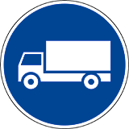
مسلك مخصص للمركبات البطيئة